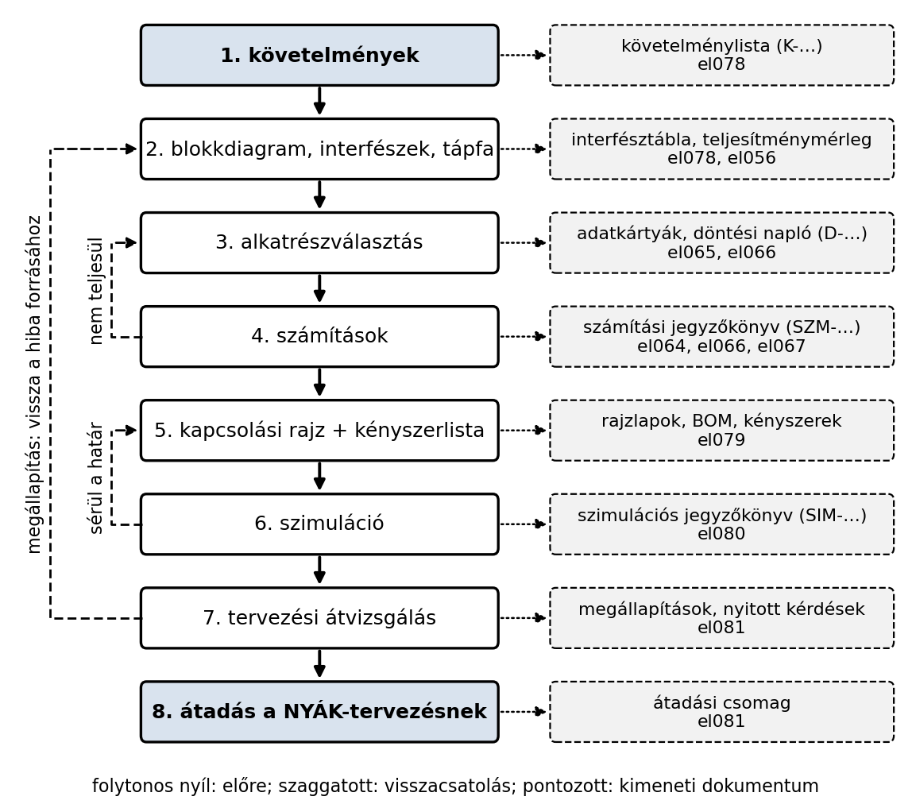
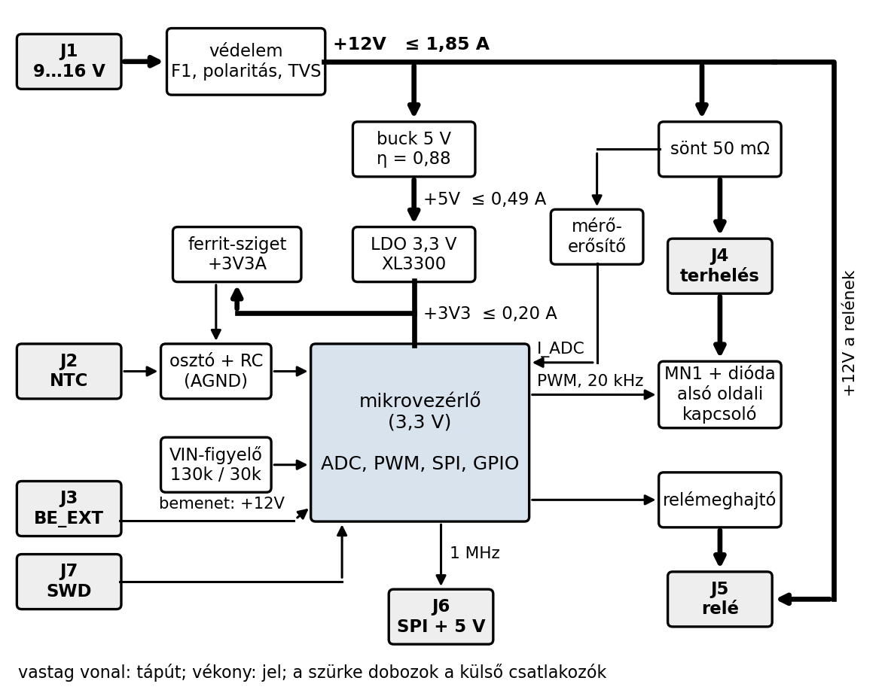

Eddig alkatrészeket, kapcsolásokat és szabályokat tanultál. Most fordítva haladunk: egy kérésből indulunk, és a végén egy átvizsgált kapcsolási rajzot adunk át annak, aki a nyomtatott áramköri lapot (NYÁK) tervezi. Ennek az alfejezetnek a végére:
Építünk a Teljesítmény, energia, hatásfok és mértékegységek, az E-sorok, tűrés és jelölések, a Szintillesztés, bemenetvédelem és pergésmentesítés, a Mikrovezérlő GPIO illesztése terhelésekhez, a Teljesítménymérleg, lineáris szabályzó és LDO, a Boost, buck-boost, invertáló átalakító és töltéspumpa, a DAC, PWM, feszültségreferenciák és ratiometrikus mérés, az Érzékelők illesztése és a jelút hibaköltségvetése, Az adatlap olvasása, a Derating, tűrésanalízis és megbízhatóság, a Hőtervezés és vezetőmelegedés, a Megfelelőség: CE, irányelvek, RoHS és a termékbiztonság logikája, Az EMC alapjai: forrás, csatolás, vevő, az ESD- és túlfeszültség-védelem az áramkörben és a Felfutási idő, sávszélesség és távvezetékek anyagára.
Egy ismerősöd ezt írja: „Kellene egy kis panel, ami 12 V-ról megy, mér hőmérsékletet, és kapcsolgat egy szelepet.” Három ember három különböző dolgot tervezne belőle. Az egyik olcsó modult, amely szobahőmérsékleten jól mér; a másik −20 °C-ra is jót, 16 V-os bemenettel; a harmadik még a fordított polaritást is elviseli. Mindhárom „működik”, de csak akkor derül ki, melyiket kérték, amikor a panel már elkészült.
Ugyanez a szenzormodul, amelyet a könyvben végig darabonként vizsgáltunk. Most leírjuk, mit kell tudnia, mielőtt egyetlen alkatrészt véglegesítenénk.

A folyamat felülről lefelé halad, de a szaggatott nyilak mentén vissza lehet lépni. Ha a számítás azt mutatja, hogy egy alkatrész nem felel meg, új alkatrész kell; ha a szimuláció határsértést talál, a rajz módosul; ha az átvizsgálás hibát talál, akár a blokkdiagramig is vissza lehet menni. Minden lépésnek írásos kimenete van: ezekből áll majd a Tervezési átvizsgálás és átadás a NYÁK-tervezésnek átadási csomagja.
Hasonlat: a követelménylista olyan, mint egy lakás építési megrendelése: „három szoba, a nappali délre néz” – nem azt írja le, melyik téglából épüljön. A hasonlat ott sántít, hogy az elektronikában a követelmények gyakran a tervezés közben pontosodnak, mert kiderül, hogy két igény egyszerre nem teljesíthető olcsón. Ez nem hiba, ha le van írva.
Definíció. A követelmény (requirement) egy ellenőrizhető állítás arról, hogy a rendszernek mit kell tennie vagy elviselnie, milyen feltételek között. A megoldás azt írja le, hogyan teljesül.
„Használjunk buck konvertert” megoldás. „Az 5 V-os sín 0…0,5 A-t adjon legfeljebb 50 mVpp hullámossággal” követelmény. A megoldás a döntési naplóba kerül, ahol az indokát is leírjuk. Egy jó követelménynek van:
| Homályos | Mérhető |
|---|---|
| „Pontosan mérje a hőmérsékletet.” | −20…85 °C között legfeljebb ±2 °C hiba, legrosszabb esetben, kalibrálás nélkül |
| „Bírja az autóban.” | −20…60 °C környezet; 30 V, 1 ms, 2 Ω-os tesztimpulzus károsodás nélkül |
| „Legyen gyors a kapcsolás.” | 20 kHz-es PWM, 0…100 % kitöltés |
A követelmény fajtái: funkcionális (mit csinál), villamos (feszültségek, áramok, pontosság), környezeti (hőmérséklet, ESD), szabályozási (RoHS, törpefeszültség, lásd Megfelelőség: CE, irányelvek, RoHS és a termékbiztonság logikája), beszerzési (életciklus, második forrás) és tesztelhetőségi (mérési pontok). A digitális jeleknél a követelménybe írjuk az él meredekségét is: a lehető leglassabb, még megfelelő felfutási idő kevesebb zajt ad (Felfutási idő, sávszélesség és távvezetékek).
Definíció. A nyomon követhetőség (traceability) azt jelenti, hogy minden követelményhez megtalálható a számítás, szimuláció, rajzrészlet vagy mérés, amely igazolja, és fordítva: minden számítás megmondja, melyik követelményt szolgálja.
A szenzormodul teljes listája (18 tétel) a
code/elkit/data/elch24_kovetelmenyek.csv táblában van; a
legfontosabb kell prioritású tételek rövidítve:
| Jel | Mit kér | Elfogadási feltétel (rövidítve) |
|---|---|---|
| K-01 | hőmérsékletmérés | −20…85 °C, ±2 °C legrosszabb esetben |
| K-02 | induktív terhelés PWM-mel | 9…16 V, 20 kHz, legfeljebb 2 A |
| K-04 | bemenet | 9…16 V; az áram a biztosíték derating-határa alatt |
| K-06 | tesztimpulzus | 30 V, 1 ms, 2 Ω: a lábba legfeljebb 1 mA |
| K-07 | +5V kimenet | 0…0,5 A, legfeljebb 50 mVpp |
| K-08 | +3V3 sín | 3,3 V ±3 %, legfeljebb 0,2 A |
| K-09 | árammérés | 0…2 A, ±5 % a méréshatárra, kalibrálás nélkül |
| K-10 | bemenetfeszültség-mérés | ±5 %, legalább 10 Hz sávszélesség |
| K-11 | környezet | −20…60 °C, a záróréteg 25 K tartalékkal |
| K-18 | külső bemenet | J3, 3,3 V; hibás 16 V-nál a lábba legfeljebb 1 mA |
A feltételek (a −20…60 °C, a 16 V, a 2 A) a futó példa saját, szemléltető adatai, nem szabványból valók.
Definíció. A blokkdiagram a rendszer fő részeit (blokkjait) és a köztük folyó energiát és jelet mutatja, alkatrészértékek nélkül. Az interfész két blokk vagy a modul és a külvilág találkozási pontja: milyen jel, milyen szinten, milyen gyorsan, milyen védelemmel halad át rajta.

A diagramot balról jobbra olvasd: a J1-en belépő energia a védelmen át a +12V sínre jut; innen a buck 5 V-ot, abból az LDO (lineáris szabályzó) 3,3 V-ot készít. A zajérzékeny mérések a +3V3A ferrit-szigetről kapnak tápot (Tápintegritás és hidegítés). A terhelés árama a söntön, a J4-en és az MN1 MOSFET-en folyik a föld felé.
A külső interfészek táblája (a blokkdiagram kötelező kísérője):
| Csatlakozó | Jel és szint | Sebesség | Védelem |
|---|---|---|---|
| J1 tápbemenet | 9…16 V DC | DC; 30 V / 1 ms impulzus | biztosíték, polaritásvédelem, TVS, lágyindítás |
| J2 NTC | analóg, 0…3,3 V (+3V3A-ról) | < 10 Hz | TVS, soros 1 kΩ + 100 nF |
| J3 külső bemenet (BE_EXT) | 3,3 V logika | lassú | TVS, soros 100 Ω |
| J4 induktív terhelés | 12 V, kapcsolt, ≤ 2 A | PWM 20 kHz | szabadonfutó dióda, ESD |
| J5 relé | 12 V, 30 mA | néhány Hz | szabadonfutó dióda |
| J6 érzékelőpanel | +5 V; SPI, 3,3 V logika | 1 MHz, = 2 ns, 0,5 m, 100 Ω | 82 Ω soros a meghajtónál, ESD |
| J7 programozó | SWDIO, SWCLK, NRST | néhány MHz | ESD |
(Az ESD az elektrosztatikus kisülés, a TVS tranziens-elnyomó dióda; mindkettő védelmét az ESD- és túlfeszültség-védelem az áramkörben és a Tápbemeneti védelmek: biztosíték, polaritás, túlfeszültség, áramlökés tárgyalja.) Ha egy interfészen jelszintek találkoznak, a szintillesztés szempontjait (Szintillesztés, bemenetvédelem és pergésmentesítés), ha terhelést hajtunk, a meghajtó döntési fáját (Mikrovezérlő GPIO illesztése terhelésekhez) vesszük elő.
Definíció. A tápfa a tápsínek hierarchiája: melyik sín melyik szabályzón át, melyikből készül, és mit táplál. A teljesítménymérleg minden sínre összeadja a fogyasztók áramát, és a szabályzókon át visszaszámolja a bemenetre (Teljesítménymérleg, lineáris szabályzó és LDO).
Lineáris szabályzónál a bemeneti áram ( a saját fogyasztás), kapcsolóüzeműnél a teljesítményből:
Szavakkal: a buck a kimeneti teljesítményt a hatásfokkal megnövelve veszi fel; ha a bemeneti feszültség csökken, ugyanahhoz a teljesítményhez több áram kell. A mértékegység . A tápfa 0,88-as hatásfoka óvatos mintaadat: a Hatásfok, veszteségek, alkatrészválasztás és kapcsolóüzemű zaj veszteségmérlege 1 A-nél 95,1 %-ot ad, a mérleg tehát a biztonságos oldalon téved.
Az ellenállás jellegű 12 V-os fogyasztóknál (szolenoid, relé) viszont a feszültséggel nő az áram, és a hideg réztekercs ellenállása kisebb:
Itt a réz hőfoktényezője (Ellenállás és az Ohm-törvény), a tekercs hőmérséklete. Ezért nincs egyetlen „legrosszabb eset”: a bemeneti áramot több sarokban (a feltételek szélső kombinációiban) kell kiszámolni.
Gondolkodj előre: a modul 9 V-on vagy 16 V-on vesz fel több áramot? A választ a számpélda adja.
A mérleg a veszteségeket is megadja, a Hőtervezés és vezetőmelegedés képletével () ezekből a záróréteg-hőmérsékletek előzetes becslése következik. Aminek a tartaléka kicsi, az a kockázatlistára kerül.
Egy alkatrész nem csak villamosan felel meg. A választás szempontjai:
Definíció. A döntési napló (design log) bejegyzésekből áll: mit döntöttünk, mik voltak a lehetőségek, mi az indok, melyik követelményt érinti, és előzetes-e még.
| Jel | Döntés | Indok | Állapot |
|---|---|---|---|
| D-01 | +5V buckkal, +3V3 LDO-val az 5 V-ról | 12 V-ról lineárisan 1,7 W veszne el | elfogadott |
| D-02 | LDO: a fiktív XL3300, WSON-6 tokban | SOT-23-5-ben 128 °C a záróréteg | elfogadott |
| D-03 | sönt a terhelés pozitív ágában, a szabadonfutó dióda katódja a sönt előtt | folytonos föld; a sönt a szabadonfutást is méri | előzetes |
| D-04 | MN1 alsó oldalon, 100 Ω soros, 4,7 kΩ lehúzó | reset alatt belső felhúzó lehet (Mikrovezérlő GPIO illesztése terhelésekhez) | előzetes |
| D-05 | VIN-figyelő: 130 kΩ / 30 kΩ, 100 nF | nagy ellenállás, kis áram a lábba | előzetes |
A D-05 még előzetes: a Szimuláció és ellenőrzés megvizsgálja, és módosítani fogja. A D-03-at és a D-04-et a 3. záróprojekt: MOSFET-es meghajtó induktív terheléshez igazolja, illetve módosítja (a D-04 meghajtása 5 V-os gate-meghajtóra vált), és ugyanott derül ki, hogy a K-02 2 A-es felső határa ütközik a K-04 biztosítékhatárával.
Definíció. A kockázat olyan, még nem biztos esemény, amely sértheti valamelyik követelményt. Minden tételhez valószínűséget és hatást becsülünk 1–3 skálán; a rangsoroló pontszám . A skála sorrendi: a 6 sürgetőbb a 2-nél, de nem „háromszor veszélyesebb”.
A pontszámnál fontosabb két oszlop: a teendő és az ellenőrzés módja és fázisa. Egy kockázat, amelyet csak a prototípuson lehet mérni, a kapcsolási rajzon is kaphat előkészítést (tesztpont, beültethető szűrőhely). A tipikus csoportok: hő, EMC (elektromágneses kompatibilitás), szigetelés, pontosság, beszerezhetőség.
Továbbvitt eredmény. A tervezés bemenete három írásos lista: a mérhető követelménylista (azonosítóval, prioritással, igazolási móddal), a blokkdiagram interfésztáblával és tápfával, és a kockázatlista ellenőrzési módokkal; a döntéseket naplózzuk. Ezeket használja a Kapcsolási rajz konvenciói és a NYÁK-tervezőnek átadott kényszerek, a Tervezési átvizsgálás és átadás a NYÁK-tervezésnek, az 1. záróprojekt: védett tápegység 12 V-ról 5 V-ra és 3,3 V-ra, a 2. záróprojekt: érzékelő-illesztő és mérőlánc és a 3. záróprojekt: MOSFET-es meghajtó induktív terheléshez.
Adatok (mintaadat): a +5V sínen a külső egység legfeljebb 0,29 A, a +3V3-fogyasztók összesen legfeljebb 198,3 mA, a buck hatásfoka 0,88, az LDO saját árama 100 µA, a szolenoid 12 Ω, a relé 400 Ω (25 °C-on), a tápjelző LED 2 kΩ-os előtéttel, 2 V-os nyitófeszültséggel.
1. A +5V sín: A, tehát a K-07 szerinti 0,5 A alatt van.
2. 16 V, a tekercsek −20 °C-on: , így a szolenoid Ω, a relé Ω.
3. 9 V, 25 °C: A. A buck itt kér a legtöbbet, a szolenoid viszont a legkevesebbet: összességében a 16 V a rosszabb.
4. Biztosíték (F1, 2,5 A): a derating-irányelv szerint tartósan legfeljebb 75 %, azaz A. : teljesül, 1,5 % tartalékkal. Ez szoros, ezért a prototípuson mérni kell. A 12 V-os névleges sarokban a bemenő teljesítmény csak W (ez az érték szerepelt a Megfelelőség: CE, irányelvek, RoHS és a termékbiztonság logikája adapter-példájában); a követelmény szélső sarka ennek majdnem kétszerese, 29,5 W. A feltételezett 12 V / 2 A-es adapter fölött ez nyitott kérdés, és a Tervezési átvizsgálás és átadás a NYÁK-tervezésnek listájára kerül.
5. Hő (D-02): az LDO legrosszabb vesztesége az Az adatlap olvasása szerint W. WSON-6-ban °C, a 125 °C-os tervezési határ alatt.
6. Árammérés: az Érzékelők illesztése és a jelút hibaköltségvetése a 2 A-es ponton ±112 mA legrosszabb esetet adott a ±2 %-os 3,3 V-os referenciával, ami %. Ez sérti a K-09 5 %-os feltételét, vagyis az R-04 kockázat valóban fennáll. Egy 0,5 %-os referenciával ugyanott ±78 mA (3,9 %) adódik; a választás (külön referencia vagy egypontos kalibrálás) a 2. záróprojekt döntése lesz: a 2. záróprojekt: érzékelő-illesztő és mérőlánc egy külön, 3,0 V-os referenciával zárja le a K-09-et (3,9 %).
Józanész-ellenőrzés: a bemenő áram nagy része a szolenoidé; ha ez 12 V-on 1 A, akkor 16 V-on és hidegen kb. A, ahogy számoltuk.
A fejezet saját modulja, az elkit.extra_elch24 adja a
sablont: Requirement, Risk,
Decision, Record (jegyzőkönyvsor)
adatosztályok, és a gépi ellenőrzés. Először egy szándékosan rossz
követelmény:
from elkit import extra_elch24 as x, review
rossz = x.Requirement("K-99", "funkcionális", "Legyen gyors, és használjon MOSFET-et",
"", "kell", ())
print(review.format_findings(x.lint_requirements([rossz])))
reqs = x.load_requirements()
print(len(reqs), "követelmény, formai észrevétel:", len(x.lint_requirements(reqs)))fontos K-99 nincs elfogadási feltétel
fontos K-99 homályos szó mérőszám nélkül: „gyors”
fontos K-99 nincs igazolási mód
ajánlott K-99 megoldást nevez meg a követelményben: „MOSFET”
összesen: 0 kritikus, 3 fontos, 1 ajánlott
18 követelmény, formai észrevétel: 0A szűrő csak gyanús szavakat keres; azt, hogy a szám jó-e, ember dönti el. Másodszor a sarkok mérlege:
for u, t in ((9.0, 25.0), (12.0, 25.0), (16.0, 25.0), (16.0, -20.0)):
b = x.corner_budget(u, t)
print(f"{u:4.0f} V {t:4.0f} °C I_be = {b['+12V'].i_out:5.3f} A "
f"P_be = {b['+12V'].p_out:4.1f} W buck: {b['+5V'].i_in * 1e3:3.0f} mA")
print(x.corner_tree(16.0, -20.0).table("max")) 9 V 25 °C I_be = 1.084 A P_be = 9.8 W buck: 308 mA
12 V 25 °C I_be = 1.266 A P_be = 15.2 W buck: 231 mA
16 V 25 °C I_be = 1.554 A P_be = 24.9 W buck: 173 mA
16 V -20 °C I_be = 1.846 A P_be = 29.5 W buck: 173 mA
sín fajta I_ki P_ki I_be veszteség tartalék
+12V forrás 1.85 A 29.5 W 1.85 A 0 W 26 %
+5V buck 488 mA 2.44 W 173 mA 333 mW 51 %
+3V3 ldo 198 mA 654 mW 198 mA 338 mW 60 %Végül a jegyzőkönyv, a nyomon követés és a kockázatok első fele:
records = x.budget_records()
print(x.format_records(records))
status = x.trace(reqs, records)
for r in reqs:
if status[r.id] != "nincs bizonyíték":
print(r.id, status[r.id])
open_must = [r.id for r in reqs if r.priority == "kell" and status[r.id] == "nincs bizonyíték"]
print("még igazolandó (kell):", ", ".join(open_must))
print(x.format_risks(x.sort_risks()[:5]))jel mennyiség érték határ eredmény köv.
SZM-01 bemeneti áram, 16 V, hideg 1.85 A ≤ 1.88 A rendben K-04
SZM-02 +5V sín árama 488 mA ≤ 500 mA rendben K-07
SZM-03 +3V3 sín árama 198 mA ≤ 200 mA rendben K-08
SZM-04 LDO záróréteg, WSON-6 84.7 °C ≤ 125 °C rendben K-08,K-11
SZM-05 árammérés hibája 2 A-nél, WCA 5.6 % ≤ 5 % SÉRÜL K-09
SZM-06 buck záróréteg (el060) 69 °C ≤ 125 °C rendben K-11
SZM-07 +5V hullámosság (el058) 5.9 mV ≤ 50 mV rendben K-07
K-04 van bizonyíték
K-07 van bizonyíték
K-08 van bizonyíték
K-09 sérül
K-11 van bizonyíték
még igazolandó (kell): K-01, K-02, K-03, K-05, K-06, K-10, K-12, K-13, K-14, K-16, K-18
jel V H pont fázis kockázat → teendő
R-01 2 3 6 rajz az LDO záróréteg-hőmérséklete 60 °C környezetben → jobban hűlő tok
(WSON-6)
R-05 2 3 6 rajz a 30 V-os impulzus túllép egy alkatrész határértékén → TVS-fogás,
nagyobb feszültségosztály
R-06 2 3 6 rajz reset alatt bekapcsol a terhelés → gate-lehúzó ellenállás
R-07 2 3 6 prototípus kábelen érkező ESD tönkreteszi a mikrovezérlő lábát →
csatlakozónál levezetés, soros ellenállás
R-02 3 2 6 layout a 20 kHz-es PWM élei zavarják a hőmérsékletmérést → RC-szűrő,
elhelyezési kényszerA „van bizonyíték” nem azt jelenti, hogy a követelmény teljesen igazolt: a K-07 hullámosságát például csak modell mutatja, mérés még nincs. A táblát a Szimuláció és ellenőrzés egészíti ki.
| Tünet | Ok | Javítás |
|---|---|---|
| Átadáskor vita, hogy „ezt nem ezt kértük” | homályos követelmény („legyen pontos”) | szám, tartomány, körülmény, igazolási mód |
| Drága vagy rossz megoldás, amelyet senki nem mer lecserélni | a követelmény megoldást ír elő | a megoldás a döntési naplóba, indokkal |
| A biztosíték hidegben kiold, a labor nem látta | csak a 12 V-os névleges sarok számítva | a mérleg minden sarokban, a terhelés jellege szerint |
| A hibát a rajz készülte után veszik észre | nincs nyomon követés, K-09 sosem került számításra | jegyzőkönyvsor minden kell tételhez |
| Elavult mikrovezérlővel készül a terv | az életciklus nem volt szempont | életciklus és második forrás a választásnál |
Gyakori félreértés: „a tipikus értékekkel számolt mérleg elég, mert a csúcsok ritkán esnek egybe”. A tipikus értékek nem garanciák; ha az egyidejű csúcs kizárható, azt le kell írni mint feltételezést (és a firmware-nek be kell tartania).
A tervezés követelménnyel kezdődik: mérhető elfogadási feltétel, azonosító, prioritás és igazolási mód; a megoldás a döntési naplóba kerül. A blokkdiagram mutatja a fő blokkokat, az interfésztábla minden határon a jelet, szintet, sebességet és védelmet. A tápfa teljesítménymérlege sarkokban számol, mert az ellenállás jellegű terhelés árama nagy feszültségnél és hidegen nő, a kapcsolóüzemű szabályzóé kis feszültségnél. A szenzormodul legrosszabb bemeneti árama 1,85 A (a biztosíték 1,88 A-es határa alatt, szorosan), az árammérés viszont 5,6 %-os hibával sérti a követelményt. A kockázatlista sorrendet, teendőt és ellenőrzési fázist ad. Ezeket a további alfejezetek és a záróprojektek viszik tovább.
1. Példák: a) „Kikapcsolt terhelésekkel, tipikus esetben a bemeneti teljesítmény legfeljebb 1,5 W 12 V-on” (ez a K-17). b) „−20…60 °C környezetben minden funkció teljesül, a záróréteg-hőmérsékletek 25 K tartalékkal.” c) „Túláram észlelése után legfeljebb 100 ms-on belül a hibajelző LED világít.” A számok a megrendelővel egyeztetett példák; az a lényeg, hogy szám, körülmény és mérhetőség van bennük.
2. Szolenoid A, relé mA, LED mA, buck mA; összesen A. Kihasználtság %.
3. A buck mA. Az összeg A A: még teljesül, de csak 0,6 % tartalékkal. Ez érzékeny pont: a hatásfokot mérni kell, vagy nagyobb biztosítékot (és vele a vezetékezés ellenőrzését) választani.
4. . WSON-6: °C. SOT-23-5: °C, tehát a 60 °C-os környezetben nem elég. (Az csak az adatlapi tesztlapra igaz; a valós lapot a Hőtervezés és vezetőmelegedés szerint ellenőrizni kell.)
5. Példa: R-10, kategória: táp; = 2 (a kábel sérülhet), = 2 (az 5 V-os sín összeesik, a modul újraindul); pontszám 4. Teendő: a J6 +5 V-os ágába visszaállítható biztosíték vagy áramkorlátos kapcsoló; ellenőrzés: számítás (tartós zárlati áram) és prototípuson rövidzár-próba áramkorlátos tápról; fázis: rajz, mert a védelem a rajzon dől el.
6. A bemeneti áram a hőmérséklet monoton csökkenő függvénye, tehát felezéssel (intervallumfelezéssel) kereshető:
lo, hi = -40.0, 25.0
for _ in range(50):
mid = (lo + hi) / 2
if x.corner_budget(16.0, mid)["+12V"].i_out > 0.75 * 2.5:
lo = mid
else:
hi = mid
print(f"T_min = {hi:.1f} °C")T_min = -23.6 °CA határ kb. −24 °C alatt sérül: a követelmény −20 °C-os sarka még belül van, de csak kb. 4 K tartalékkal. A tekercs a saját melegedése miatt a gyakorlatban melegebb, de erre nem lehet tervezni bekapcsoláskor.
7.
def missing(reqs, records):
status = x.trace(reqs, records)
return [r.id for r in reqs if r.priority == "kell" and status[r.id] == "nincs bizonyíték"
and set(r.verification) & {"számítás", "szimuláció"}]
print(missing(reqs, records + x.vin_records()))['K-01', 'K-02', 'K-03', 'K-05', 'K-18']A lista a hátralévő munka: minden elemhez számítás vagy szimuláció kell (a K-01-hez és K-02-höz a záróprojektekben), vagy indoklás, hogy miért marad nyitott kérdés az átadásig.